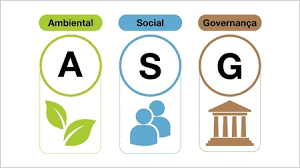

¿Qué son los Aspectos ASG?
ASG: Factores Ambientales, Sociales y de Gobernanza que determinan la sostenibilidad y el riesgo a largo plazo de las organizaciones.

Ambientales
- Huella de carbono y cambio climático
- Gestión de residuos electrónicos
- Uso de energías renovables
- Consumo de recursos hídricos
Sociales
- Condiciones laborales dignas
- Diversidad e inclusión
- Privacidad y protección de datos
- Relación con comunidades locales
Gobernanza
- Ética empresarial y transparencia
- Gestión de riesgos
- Composición del consejo directivo
- Cumplimiento normativo
Proceso de Análisis de Materialidad
1. Identificación de Temas Relevantes
- Consulta con grupos de interés internos y externos
- Revisión de estándares internacionales (GRI, SASB)
- Benchmarking con empresas del sector
2. Evaluación de Impacto y Prioridad
- Análisis de riesgos y oportunidades ASG
- Valoración según impacto financiero y reputacional
- Clasificación por grado de materialidad
3. Integración en la Estrategia Empresarial
- Asignación de responsabilidades ASG
- Indicadores de seguimiento y reporte
- Comunicación transparente con stakeholders
Cronograma de Evaluación
2024: Consulta y Diagnóstico
Encuestas y entrevistas a empleados, clientes, y socios.
2025: Evaluación de Materialidad
Jerarquización de temas ASG críticos para el negocio.
2026: Informe y Revisión
Publicación del informe ASG y ajuste de objetivos.
Indicadores ASG Relevantes
| Indicador | Meta | Medición |
|---|---|---|
| Reducción de emisiones de CO₂ | -30% para 2026 | Inventario de gases efecto invernadero |
| Igualdad de género en mandos medios | 50% | Estadísticas internas |
| Índice de cumplimiento normativo | 100% | Auditoría de compliance |
Beneficios del Enfoque ASG
- Acceso a financiación sostenible
- Mejora de imagen corporativa
- Mitigación de riesgos operativos
- Mayor fidelización de clientes y empleados